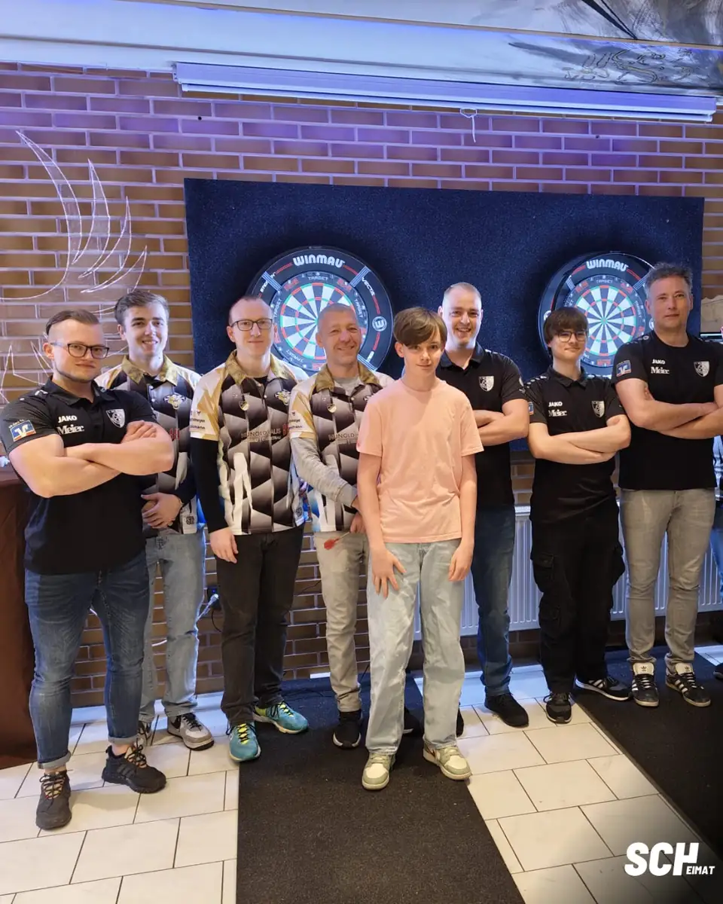
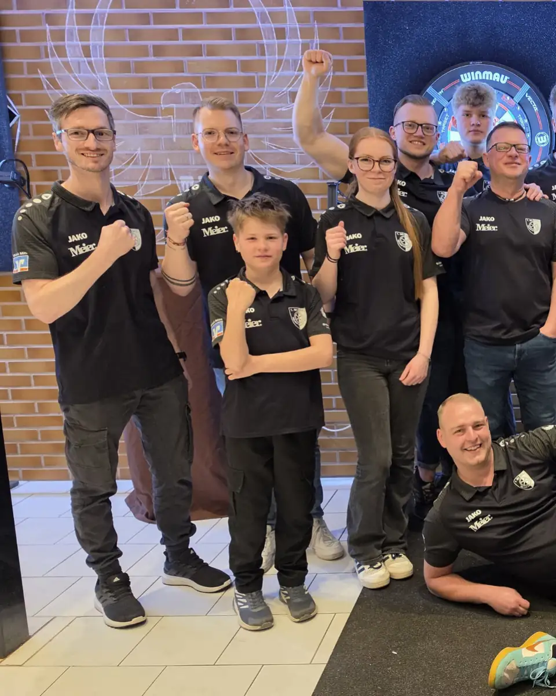
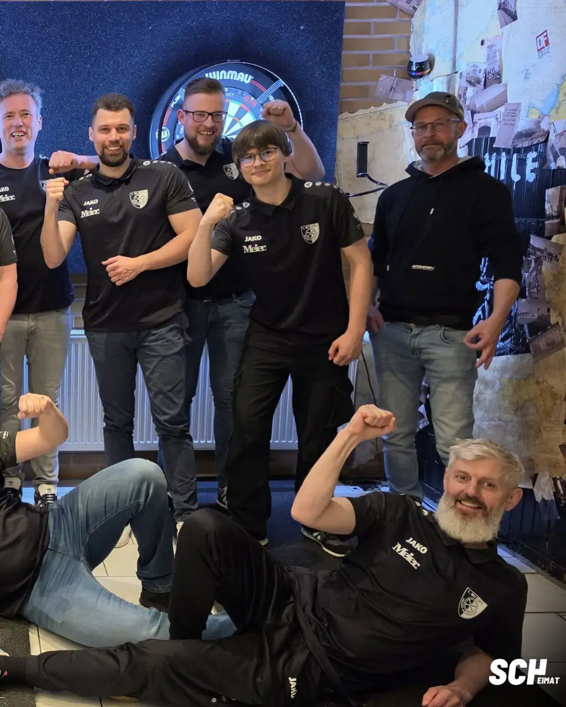
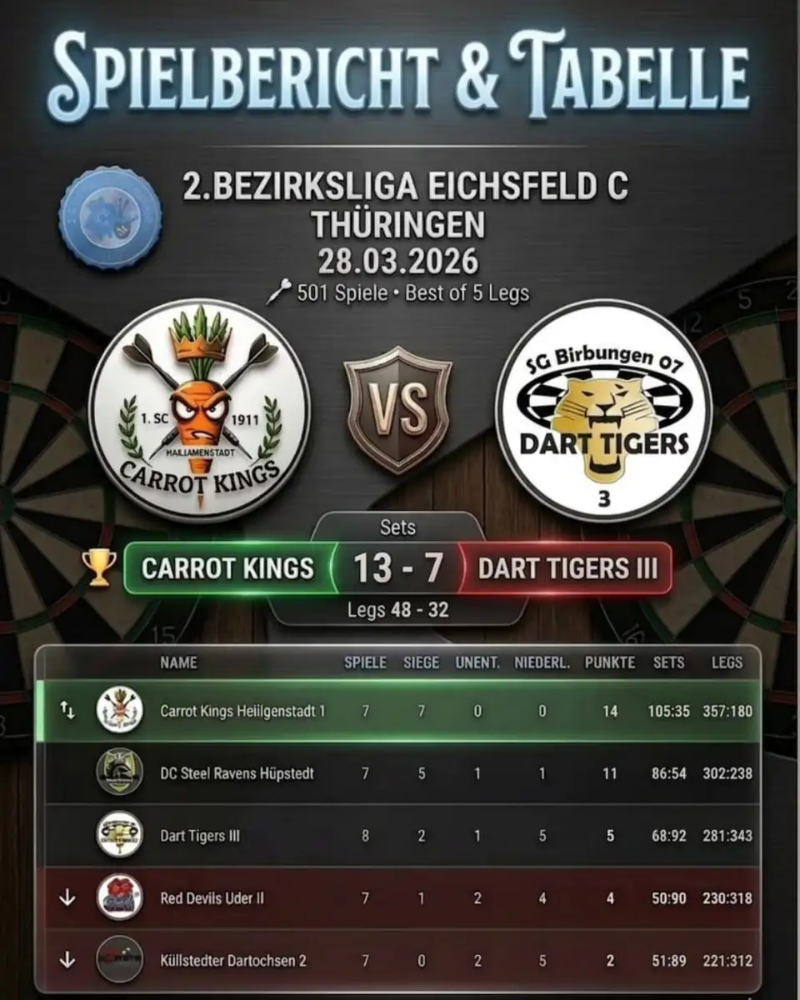

Krönung in Rekordzeit:
Zweieinhalb Jahre nach der Gründung feiern unsere Carrot Kings ihren ersten großen Meilenstein: Nachdem man im Premierenjahr noch knapp mit der Vizemeisterschaft vorliebnehmen musste, hat die Mannschaft in dieser Saison den Sack vorzeitig zugemacht. Bereits einen Spieltag vor Schluss steht fest: Die Meisterschaft in der Bezirksliga Eichsfeld C geht nach Heiligenstadt!
Nervenschlacht gegen Birkungen
Der Weg zum Titel führte am vergangenen Wochenende über die Dart Tigers Birkungen III. Die Ausgangslage war klar: Ein Sieg musste her, um den Vorsprung auf den direkten Verfolger aus Hüpstedt uneinholbar auszubauen. Bei einer Niederlage wäre es am letzten Spieltag zum ultimativen „Endspiel“ gekommen – eine Drucksituation, die man den Spielern deutlich anmerkte.
Trotz des krankheitsbedingten Ausfalls von Marcel Cheap, der zuletzt in Topform agierte, konnten Kapitän Domenic Gremmler und Vize Nils Wiesner auf eine schlagkräftige Truppe setzen. Gemeinsam mit Marian Adler und Andreas Kuna sowie Nachwuchstalent Magnus Dittrich als Backup ging es ans Board.
Krimi im „Madhouse“
Der Start verlief holprig: Während Marian und Andreas ihr Doppel abgeben mussten, fanden Domenic und Nils zunächst perfekt ins Spiel (Schnitt von über 60 Punkten in den ersten zwei Legs). Doch dann flatterten die Nerven – die Doppel-Felder schienen wie zugenagelt. Erst im berüchtigten „Madhouse“ (Doppel 1) behielt der Kapitän die Ruhe und sicherte den ersten wichtigen Punkt.
Das Match blieb ein Krimi, geprägt von engen Decidern. Matchwinner des Tages war Marian Adler, der in seinen Einzeln ungeschlagen blieb und den Weg ebnete. Den finalen „Deckel“ machte schließlich Andreas Kuna drauf: Mit dem elften Sieg des Tages war die Entscheidung gefallen – die Meisterschaft war perfekt!
Das neue Ziel: Ungeschlagen bleiben!
Nach der Pflicht folgt nun die Kür. Das Team hat sich für den Saisonabschluss ein neues Ziel gesetzt: Die Spielzeit 2025/2026 soll ungeschlagen beendet werden. Damit wären nicht nur alle Erwartungen erfüllt, sondern die Saisonziele weit übertroffen.



